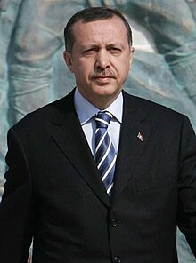

Tayyip Erdoğan
Visionary Statesman
Recep Tayyip Erdoğan is a prominent Turkish leader known for his dynamic and assertive style of leadership. He has played a significant role in driving economic growth, enhancing infrastructure, and increasing Turkey's global influence. His emphasis on Turkish nationalism and cultural preservation has resonated with many supporters.
